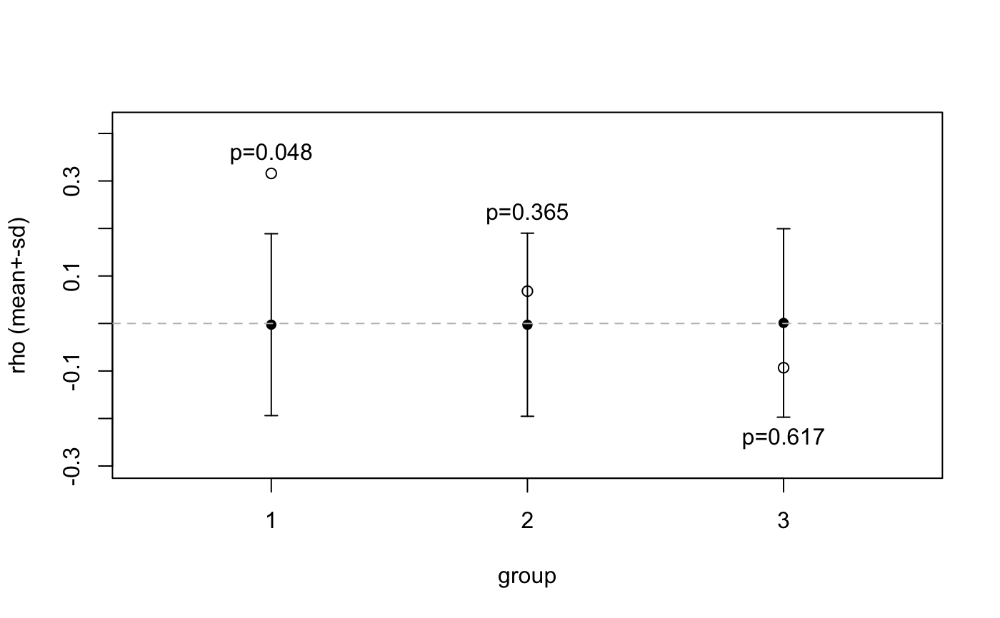
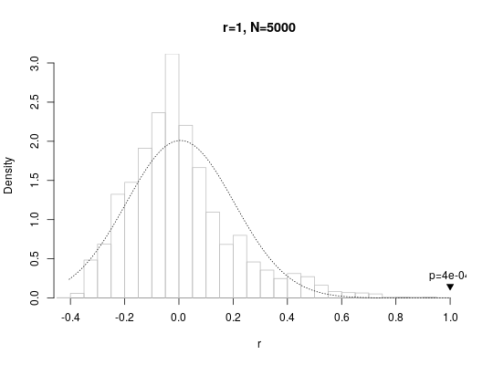
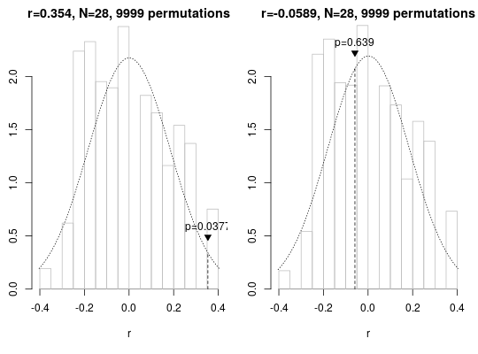

Perform a Mantel permutation test.
Perform a correlation test between two matrices. The Mantel test is
different from classical correlation tests (such as
cor.test) in that the null distribution of the
correlation coefficient is determined empirically by shuffling the locations
in one of the matrices and calculating the resulting correlations to
generate an empirical null distribution for the given data set.
mantel.test(x, y, plot = TRUE, ...) # S3 method for default mantel.test(x, y, plot = TRUE, method = "pearson", trials = 5000, shuffle = shuffle.locations, ...) # S3 method for formula mantel.test(x, y, plot = TRUE, stringdistfun = normalisedlevenshteindists, meaningdistfun = hammingdists, ...) # S3 method for list mantel.test(x, y, plot = TRUE, ...)
Arguments
| x | a formula, distance matrix, or list of distance matrices |
|---|---|
| y | a data frame, distance matrix, or list of matrices of the same length as |
| plot | logical: immediately produce a plot of the test results |
| ... | extra arguments passed on to the default method |
| method | correlation coefficient to be computed (default: "pearson") |
| trials | maximum number of permutations to be tested |
| shuffle | a function applied to |
| stringdistfun | when |
| meaningdistfun | when |
Value
a dataframe of class mantel specifying the results of
the Mantel test(s)
Details
If the number of possible permutations is reasonably close to
trials, a deterministic enumeration of all the permutations will be
carried out instead of random sampling.
Methods (by class)
default: perform Mantel correlation test on two distance matrices. The distance matrices can either be of typedist, plain R matrices or any object that can be interpreted bycheck.dist.formula: This function can be called with experimental result data frames, distance matrix calculation is taken care of internally.xis a formula of the types ~ m1 + m2 + ...wheresspecifies a column of character strings in data frame or matrixy, whilem1etc. are columns specifying the different meaning dimensions. To calculate the respective distances, the functionstringdistfunis applied to the strings,meaningdistfunto the meaning columns.list: whenxis a list of distance matrices, andyis either a single distance matrix or a list of distance matrices the same length asx. Runs a Mantel test for every pairwise combination of distance matrices inxandyand returns amantelobject with as many rows.
See also
plot.mantel, cor,
hammingdists, normalisedlevenshteindists,
orderinsensitivedists
Examples
# small distance matrix, Mantel test run deterministically mantel.test(dist(1:7), dist(1:7))#>#> Mantel permutation test (method: pearson) #> r = 1, 1 permutations, mean = 3.03e-18, sd = 0.2255377 #> p (exact) = 0.000595 #># smallest distance matrix using random permutations (based on default trials=5000) mantel.test(dist(1:8), dist(1:8))#> Mantel permutation test (method: pearson) #> r = 1, 1 permutations, mean = 0.00505, sd = 0.1983759 #> p (empirical) = 4e-04 #>mantel.test(word ~ Var1 + Var2, cbind(word=c("aa", "ab", "ba", "bb"), enumerate.meaningcombinations(c(2, 2))))#>#> Mantel permutation test (method: pearson) #> r = 1, 1 permutations, mean = 0, sd = 0.7223151 #> p (exact) = 0.36 #># running tests on a list of distance matrices mantel.test(list(dist(1:16), dist(sample(16:1))), hammingdists(enumerate.meaningcombinations(c(2, 2, 2, 2))))#> Warning: the condition has length > 1 and only the first element will be used#> Mantel permutation test (method: pearson) #> r = 0.366, 1 permutations, mean = -0.000317, sd = 0.0838737 #> p (empirical) = 2e-04 (veridical correlation is highest found) #>#> Warning: the condition has length > 1 and only the first element will be used#> Mantel permutation test (method: pearson) #> r = -0.0276, 1 permutations, mean = 0.000366, sd = 0.08487016 #> p (empirical) = 0.581 #>